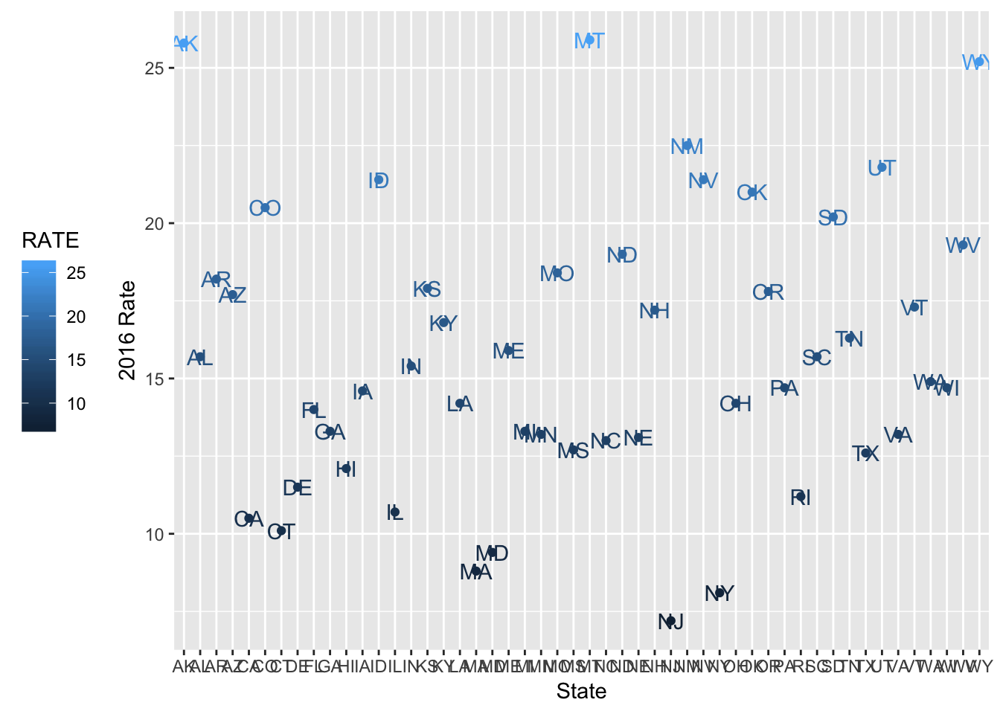
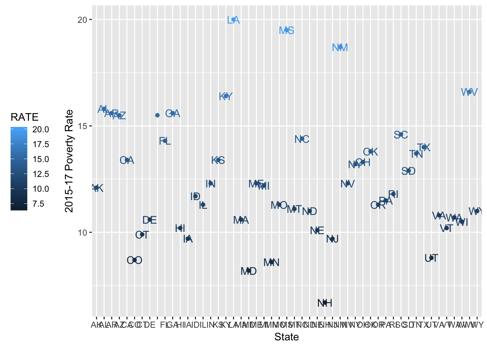
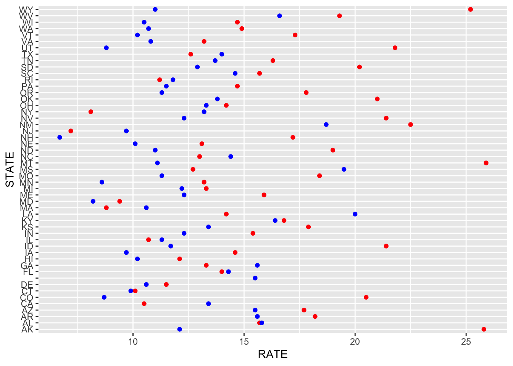
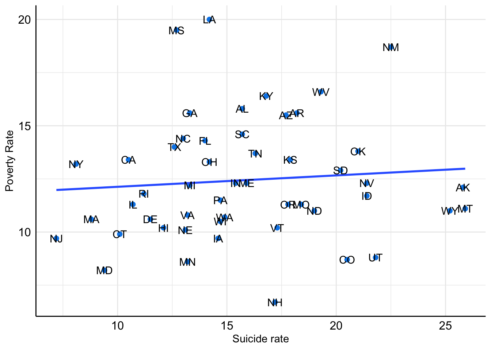

Suicide, a global public health concern, is the second leading cause of death among the youth worldwide. Despite the related scientific production, suicide stands out as the only, among the 10 leading causes of death in the United States, with an increasing incidence rate in the last decade.
Most research focuses on suicide prevention as a clinical goal, and a number of prediction algorithms including individual-level social, cultural, clinical and biochemical correlates have been developed within the last decades. However, we consider that suicide needs to be studied and assessed from a multilevel perspective. Since Durkheim’s sociologic investigations, it is accepted that the causes of suicide not only act at the individual level, but also at overarching, ecological levels of causation. A number of current examples point in this direction: in the U.S., suicide in rural areas doubles the rate in urban ones; in London, socially deprived neighborhoods associate the higher incidence rates; across Europe, some countries exhibit 5 times more suicide rate.
Although modern epidemiology is mainly concerned with causes and effects at the individual level, there is growing interest on depicting how population-level determinants interact with known individual-level risk factors in what has been called eco-epidemiologic models. In our opinion, information on ecological-level determinants of suicide rates is needed to develop evidence-based multilevel frameworks for research and prevention.
library(tidyverse)## ── Attaching packages ─────────────────────────────────────── tidyverse 1.2.1 ──## ✔ ggplot2 3.0.0 ✔ purrr 0.2.5
## ✔ tibble 1.4.2 ✔ dplyr 0.7.6
## ✔ tidyr 0.8.1 ✔ stringr 1.3.1
## ✔ readr 1.1.1 ✔ forcats 0.3.0## ── Conflicts ────────────────────────────────────────── tidyverse_conflicts() ──
## ✖ dplyr::filter() masks stats::filter()
## ✖ dplyr::lag() masks stats::lag()library(ggplot2)First, we will plot suicide rates per state as of year 2016.
data_base =
tibble(
list = list.files("data", full.names = TRUE),
map(list, read_csv)
) %>%
unnest() %>%
separate(list, into = c("state", "rate", "deaths", "url"), sep = "_") %>%
select(state, rate, deaths, url)## Parsed with column specification:
## cols(
## `STATE;RATE` = col_character()
## )## Parsed with column specification:
## cols(
## `PK` = col_character()
## )## Warning in rbind(names(probs), probs_f): number of columns of result is not
## a multiple of vector length (arg 1)## Warning: 182 parsing failures.
## row # A tibble: 5 x 5 col row col expected actual file expected <int> <chr> <chr> <chr> <chr> actual 1 1 <NA> 1 columns 2 columns 'data/POVERTY1517.xl… file 2 2 "PK\u0003\u0004\u001… "" embedded nu… 'data/POVERTY1517.xl… row 3 3 "PK\u0003\u0004\u001… "" embedded nu… 'data/POVERTY1517.xl… col 4 3 <NA> 1 columns 2 columns 'data/POVERTY1517.xl… expected 5 4 <NA> 1 columns 2 columns 'data/POVERTY1517.xl…
## ... ................. ... .......................................................................... ........ .......................................................................... ...... .......................................................................... .... .......................................................................... ... .......................................................................... ... .......................................................................... ........ ..........................................................................
## See problems(...) for more details.## Parsed with column specification:
## cols(
## STATE = col_character(),
## RATE = col_double(),
## DEATHS = col_number(),
## URL = col_character()
## )## Parsed with column specification:
## cols(
## STATE = col_character(),
## RATE = col_double(),
## DEATHS = col_number(),
## URL = col_character()
## )
## Parsed with column specification:
## cols(
## STATE = col_character(),
## RATE = col_double(),
## DEATHS = col_number(),
## URL = col_character()
## )## Warning: Expected 4 pieces. Missing pieces filled with `NA` in 395 rows [1,
## 2, 3, 4, 5, 6, 7, 8, 9, 10, 11, 12, 13, 14, 15, 16, 17, 18, 19, 20, ...].suic_data = read_csv(file = "./data/SUICIDE2016.csv")## Parsed with column specification:
## cols(
## STATE = col_character(),
## RATE = col_double(),
## DEATHS = col_number(),
## URL = col_character()
## )plot = suic_data %>%
ggplot(aes(x = STATE, y = RATE, color = RATE, label=STATE)) +
geom_point() +
geom_text(aes(label=STATE)) +
labs(
x = "State" ,
y = "2016 Rate"
) +
theme(legend.position = "left")
plot
Then, we will plot poverty rates per state, for the 2015-2017 period.
poverty_data = read.csv(file = "./data/POVERTY1517.csv", sep =";")
poverty_data## STATE RATE
## 1 AL 15.8
## 2 AK 12.1
## 3 AZ 15.5
## 4 AR 15.6
## 5 CA 13.4
## 6 CO 8.7
## 7 CT 9.9
## 8 DE 10.6
## 9 District of Columbia\xc9. 15.5
## 10 FL 14.3
## 11 GA 15.6
## 12 HI 10.2
## 13 ID 11.7
## 14 IL 11.3
## 15 IN 12.3
## 16 IA 9.7
## 17 KS 13.4
## 18 KY 16.4
## 19 LA 20.0
## 20 ME 12.3
## 21 MD 8.2
## 22 MA 10.6
## 23 MI 12.2
## 24 MN 8.6
## 25 MS 19.5
## 26 MO 11.3
## 27 MT 11.1
## 28 NE 10.1
## 29 NV 12.3
## 30 NH 6.7
## 31 NJ 9.7
## 32 NM 18.7
## 33 NY 13.2
## 34 NC 14.4
## 35 ND 11.0
## 36 OH 13.3
## 37 OK 13.8
## 38 OR 11.3
## 39 PA 11.5
## 40 RI 11.8
## 41 SC 14.6
## 42 SD 12.9
## 43 TN 13.7
## 44 TX 14.0
## 45 UT 8.8
## 46 VT 10.2
## 47 VA 10.8
## 48 WA 10.7
## 49 WV 16.6
## 50 WI 10.5
## 51 WY 11.0poverty_plot = poverty_data %>%
ggplot(aes(x = STATE, y = RATE, color = RATE, label=STATE)) +
geom_point() +
geom_text(aes(label=STATE)) +
labs(
x = "State" ,
y = "2015-17 Poverty Rate"
) +
theme(legend.position = "left")
poverty_plot
plot2 <- ggplot(NULL, aes(RATE, STATE)) +
geom_point(data = suic_data, color = "red") + # Red is Suicide
geom_point(data = poverty_data, color = "blue") # Blue is Poverty
plot2
Finally, we will plot the suicide rate per state against the percentage of people living under the poverty level, in order to explore potential correlations between them.
dffinal <- merge(suic_data, poverty_data, by = 'STATE')
dffinal## STATE RATE.x DEATHS
## 1 AK 25.8 193
## 2 AL 15.7 788
## 3 AR 18.2 555
## 4 AZ 17.7 1271
## 5 CA 10.5 4294
## 6 CO 20.5 1168
## 7 CT 10.1 397
## 8 DE 11.5 119
## 9 FL 14.0 3143
## 10 GA 13.3 1409
## 11 HI 12.1 174
## 12 IA 14.6 451
## 13 ID 21.4 351
## 14 IL 10.7 1415
## 15 IN 15.4 1034
## 16 KS 17.9 514
## 17 KY 16.8 756
## 18 LA 14.2 677
## 19 MA 8.8 631
## 20 MD 9.4 586
## 21 ME 15.9 226
## 22 MI 13.3 1364
## 23 MN 13.2 745
## 24 MO 18.4 1133
## 25 MS 12.7 383
## 26 MT 25.9 267
## 27 NC 13.0 1373
## 28 ND 19.0 140
## 29 NE 13.1 246
## 30 NH 17.2 244
## 31 NJ 7.2 687
## 32 NM 22.5 471
## 33 NV 21.4 650
## 34 NY 8.1 1679
## 35 OH 14.2 1707
## 36 OK 21.0 822
## 37 OR 17.8 772
## 38 PA 14.7 1970
## 39 RI 11.2 126
## 40 SC 15.7 815
## 41 SD 20.2 163
## 42 TN 16.3 1111
## 43 TX 12.6 3488
## 44 UT 21.8 620
## 45 VA 13.2 1166
## 46 VT 17.3 118
## 47 WA 14.9 1141
## 48 WI 14.7 866
## 49 WV 19.3 362
## 50 WY 25.2 144
## URL RATE.y
## 1 /nchs/pressroom/states/alaska/alaska.htm 12.1
## 2 /nchs/pressroom/states/alabama/alabama.htm 15.8
## 3 /nchs/pressroom/states/arkansas/arkansas.htm 15.6
## 4 /nchs/pressroom/states/arizona/arizona.htm 15.5
## 5 /nchs/pressroom/states/california/california.htm 13.4
## 6 /nchs/pressroom/states/colorado/colorado.htm 8.7
## 7 /nchs/pressroom/states/connecticut/connecticut.htm 9.9
## 8 /nchs/pressroom/states/delaware/delaware.htm 10.6
## 9 /nchs/pressroom/states/florida/florida.htm 14.3
## 10 /nchs/pressroom/states/georgia/georgia.htm 15.6
## 11 /nchs/pressroom/states/hawaii/hawaii.htm 10.2
## 12 /nchs/pressroom/states/iowa/iowa.htm 9.7
## 13 /nchs/pressroom/states/idaho/idaho.htm 11.7
## 14 /nchs/pressroom/states/illinois/illinois.htm 11.3
## 15 /nchs/pressroom/states/indiana/indiana.htm 12.3
## 16 /nchs/pressroom/states/kansas/kansas.htm 13.4
## 17 /nchs/pressroom/states/kentucky/kentucky.htm 16.4
## 18 /nchs/pressroom/states/louisiana/louisiana.htm 20.0
## 19 /nchs/pressroom/states/massachusetts/massachusetts.htm 10.6
## 20 /nchs/pressroom/states/maryland/maryland.htm 8.2
## 21 /nchs/pressroom/states/maine/maine.htm 12.3
## 22 /nchs/pressroom/states/michigan/michigan.htm 12.2
## 23 /nchs/pressroom/states/minnesota/minnesota.htm 8.6
## 24 /nchs/pressroom/states/missouri/missouri.htm 11.3
## 25 /nchs/pressroom/states/mississippi/mississippi.htm 19.5
## 26 /nchs/pressroom/states/montana/montana.htm 11.1
## 27 /nchs/pressroom/states/northcarolina/northcarolina.htm 14.4
## 28 /nchs/pressroom/states/northdakota/northdakota.htm 11.0
## 29 /nchs/pressroom/states/nebraska/nebraska.htm 10.1
## 30 /nchs/pressroom/states/newhampshire/newhampshire.htm 6.7
## 31 /nchs/pressroom/states/newjersey/newjersey.htm 9.7
## 32 /nchs/pressroom/states/newmexico/newmexico.htm 18.7
## 33 /nchs/pressroom/states/nevada/nevada.htm 12.3
## 34 /nchs/pressroom/states/newyork/newyork.htm 13.2
## 35 /nchs/pressroom/states/ohio/ohio.htm 13.3
## 36 /nchs/pressroom/states/oklahoma/oklahoma.htm 13.8
## 37 /nchs/pressroom/states/oregon/oregon.htm 11.3
## 38 /nchs/pressroom/states/pennsylvania/pennsylvania.htm 11.5
## 39 /nchs/pressroom/states/rhodeisland/rhodeisland.htm 11.8
## 40 /nchs/pressroom/states/southcarolina/southcarolina.htm 14.6
## 41 /nchs/pressroom/states/southdakota/southdakota.htm 12.9
## 42 /nchs/pressroom/states/tenessee/tennessee.htm 13.7
## 43 /nchs/pressroom/states/texas/texas.htm 14.0
## 44 /nchs/pressroom/states/utah/utah.htm 8.8
## 45 /nchs/pressroom/states/virginia/virginia.htm 10.8
## 46 /nchs/pressroom/states/vermont/vermont.htm 10.2
## 47 /nchs/pressroom/states/washington/washington.htm 10.7
## 48 /nchs/pressroom/states/wisconsin/wisconsin.htm 10.5
## 49 /nchs/pressroom/states/westvirginia/westvirginia.htm 16.6
## 50 /nchs/pressroom/states/wyoming/wyoming.htm 11.0install.packages("lmtest", repos = "http://cran.us.r-project.org")##
## There is a binary version available but the source version is
## later:
## binary source needs_compilation
## lmtest 0.9-35 0.9-36 TRUE## Do you want to install from sources the package which needs compilation?## installing the source package 'lmtest'## Warning in install.packages :
## installation of package 'lmtest' had non-zero exit statusggplot(dffinal, aes(RATE.x, RATE.y), label = STATE) +
geom_point(color = '#0087E9', size = 2) +
geom_smooth(method='lm', se = FALSE) +
geom_text(aes(RATE.x, RATE.y, label=STATE)) +
labs(
x = "Suicide rate" ,
y = "Poverty Rate"
) +
theme_minimal() +
theme(axis.text = element_text(color = 'black', size = 12),
axis.line = element_line(color = 'black'))
The scatter plot does not look as if there was a linear relationship between both variables. However, we will end our inquiry by obtaining a correlation coefficient.
install.packages("ggpubr", repos = "http://cran.us.r-project.org")##
## There is a binary version available but the source version is
## later:
## binary source needs_compilation
## ggpubr 0.1.6 0.2 FALSE## installing the source package 'ggpubr'library("ggpubr")## Loading required package: magrittr##
## Attaching package: 'magrittr'## The following object is masked from 'package:purrr':
##
## set_names## The following object is masked from 'package:tidyr':
##
## extractdffinal## STATE RATE.x DEATHS
## 1 AK 25.8 193
## 2 AL 15.7 788
## 3 AR 18.2 555
## 4 AZ 17.7 1271
## 5 CA 10.5 4294
## 6 CO 20.5 1168
## 7 CT 10.1 397
## 8 DE 11.5 119
## 9 FL 14.0 3143
## 10 GA 13.3 1409
## 11 HI 12.1 174
## 12 IA 14.6 451
## 13 ID 21.4 351
## 14 IL 10.7 1415
## 15 IN 15.4 1034
## 16 KS 17.9 514
## 17 KY 16.8 756
## 18 LA 14.2 677
## 19 MA 8.8 631
## 20 MD 9.4 586
## 21 ME 15.9 226
## 22 MI 13.3 1364
## 23 MN 13.2 745
## 24 MO 18.4 1133
## 25 MS 12.7 383
## 26 MT 25.9 267
## 27 NC 13.0 1373
## 28 ND 19.0 140
## 29 NE 13.1 246
## 30 NH 17.2 244
## 31 NJ 7.2 687
## 32 NM 22.5 471
## 33 NV 21.4 650
## 34 NY 8.1 1679
## 35 OH 14.2 1707
## 36 OK 21.0 822
## 37 OR 17.8 772
## 38 PA 14.7 1970
## 39 RI 11.2 126
## 40 SC 15.7 815
## 41 SD 20.2 163
## 42 TN 16.3 1111
## 43 TX 12.6 3488
## 44 UT 21.8 620
## 45 VA 13.2 1166
## 46 VT 17.3 118
## 47 WA 14.9 1141
## 48 WI 14.7 866
## 49 WV 19.3 362
## 50 WY 25.2 144
## URL RATE.y
## 1 /nchs/pressroom/states/alaska/alaska.htm 12.1
## 2 /nchs/pressroom/states/alabama/alabama.htm 15.8
## 3 /nchs/pressroom/states/arkansas/arkansas.htm 15.6
## 4 /nchs/pressroom/states/arizona/arizona.htm 15.5
## 5 /nchs/pressroom/states/california/california.htm 13.4
## 6 /nchs/pressroom/states/colorado/colorado.htm 8.7
## 7 /nchs/pressroom/states/connecticut/connecticut.htm 9.9
## 8 /nchs/pressroom/states/delaware/delaware.htm 10.6
## 9 /nchs/pressroom/states/florida/florida.htm 14.3
## 10 /nchs/pressroom/states/georgia/georgia.htm 15.6
## 11 /nchs/pressroom/states/hawaii/hawaii.htm 10.2
## 12 /nchs/pressroom/states/iowa/iowa.htm 9.7
## 13 /nchs/pressroom/states/idaho/idaho.htm 11.7
## 14 /nchs/pressroom/states/illinois/illinois.htm 11.3
## 15 /nchs/pressroom/states/indiana/indiana.htm 12.3
## 16 /nchs/pressroom/states/kansas/kansas.htm 13.4
## 17 /nchs/pressroom/states/kentucky/kentucky.htm 16.4
## 18 /nchs/pressroom/states/louisiana/louisiana.htm 20.0
## 19 /nchs/pressroom/states/massachusetts/massachusetts.htm 10.6
## 20 /nchs/pressroom/states/maryland/maryland.htm 8.2
## 21 /nchs/pressroom/states/maine/maine.htm 12.3
## 22 /nchs/pressroom/states/michigan/michigan.htm 12.2
## 23 /nchs/pressroom/states/minnesota/minnesota.htm 8.6
## 24 /nchs/pressroom/states/missouri/missouri.htm 11.3
## 25 /nchs/pressroom/states/mississippi/mississippi.htm 19.5
## 26 /nchs/pressroom/states/montana/montana.htm 11.1
## 27 /nchs/pressroom/states/northcarolina/northcarolina.htm 14.4
## 28 /nchs/pressroom/states/northdakota/northdakota.htm 11.0
## 29 /nchs/pressroom/states/nebraska/nebraska.htm 10.1
## 30 /nchs/pressroom/states/newhampshire/newhampshire.htm 6.7
## 31 /nchs/pressroom/states/newjersey/newjersey.htm 9.7
## 32 /nchs/pressroom/states/newmexico/newmexico.htm 18.7
## 33 /nchs/pressroom/states/nevada/nevada.htm 12.3
## 34 /nchs/pressroom/states/newyork/newyork.htm 13.2
## 35 /nchs/pressroom/states/ohio/ohio.htm 13.3
## 36 /nchs/pressroom/states/oklahoma/oklahoma.htm 13.8
## 37 /nchs/pressroom/states/oregon/oregon.htm 11.3
## 38 /nchs/pressroom/states/pennsylvania/pennsylvania.htm 11.5
## 39 /nchs/pressroom/states/rhodeisland/rhodeisland.htm 11.8
## 40 /nchs/pressroom/states/southcarolina/southcarolina.htm 14.6
## 41 /nchs/pressroom/states/southdakota/southdakota.htm 12.9
## 42 /nchs/pressroom/states/tenessee/tennessee.htm 13.7
## 43 /nchs/pressroom/states/texas/texas.htm 14.0
## 44 /nchs/pressroom/states/utah/utah.htm 8.8
## 45 /nchs/pressroom/states/virginia/virginia.htm 10.8
## 46 /nchs/pressroom/states/vermont/vermont.htm 10.2
## 47 /nchs/pressroom/states/washington/washington.htm 10.7
## 48 /nchs/pressroom/states/wisconsin/wisconsin.htm 10.5
## 49 /nchs/pressroom/states/westvirginia/westvirginia.htm 16.6
## 50 /nchs/pressroom/states/wyoming/wyoming.htm 11.0cor(dffinal$RATE.x, dffinal$RATE.y)## [1] 0.08454949